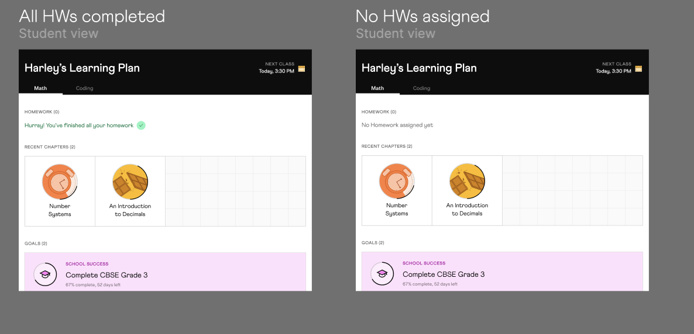

The Problem
Cuemath's tutors couldn't customize learning, and homework was buried two layers deep — workarounds broke progress tracking and students missed assignments.
When a tutor wanted to assemble a custom plan, the only path was program stacking — assign one program, then another, sometimes a third. Every chapter from each program came along, including ones that didn't apply. Within days, progress totals stopped meaning anything, homework lists became unreadable, and tracking broke.
For students, homework was hidden. To see what was due, they had to open a chapter, scroll past everything else, and find it at the bottom. Most never did. Tutors checking who'd done what had to dig into each chapter, item by item.
Role
Experience design: A shared surface with role-aware controls — Cuemath's tutoring home for tutors and students, built within a new Chapter → Block → Node structure.
- End-to-end UX/UI — goal creation flow, tutoring homepage, homework queue, and chapter UX for both tutor and student views
- Visual system — 13 distinct content treatments, category hierarchy (Lessons vs Resources), and state visuals (locked, unlocked, in-progress, completed)
- Interaction design — micro-interactions and motion across cards, state changes, and the homework queue
- Cross-functional collaboration — PM (structure spec), Engineering (data migration), Curriculum (content), Illustrator + Motion (visual + interaction language)
Decisions
Three constraints set the shape of the work: students needed homework where they'd actually see it, the chapter page had to stay readable with 13 content types and four states, and the existing system couldn't break. All in 4 weeks. Two design decisions carried the weight.
Decision 1 — Make urgency readable without reading
Homework was buried two layers deep before. Moving the queue to the top of the homepage wasn't enough, urgency had to be legible at a glance — across cards, across states, across the seven days from assigned to overdue.
The visual language: color shifts day-by-day (Day 1–4 normal, Day 5–6 warning, Day 7 overdue), state visuals on each card (assigned, in-progress, completed), and micro-animations drawing the eye to what had changed since the student last opened the screen. Color wasn't alone, every state carried an icon, a label, or a position shift, so urgency held up for color-blind students too.
Two empty states shipped: No homework assigned and All homework done. Both kept Recent Chapters and Goals visible — empty homework didn't mean an empty homepage.
An early version had a stroke animation across active mandatory cards. The internal teacher cohort flagged it as jarring. I removed it and let the static state visuals do the work.
The queue showed ten cards at a time — a cap settled with engineering and stakeholders during spec. The 50+ overdue edge wasn't designed for; the hypothesis was that the queue's visibility plus active parent engagement would trigger a conversation with the tutor before pile-up got that bad. V2 was where the data would say.

Two empty states for the homework queue. Recent Chapters and Goals stay anchored — empty homework didn't mean an empty homepage.
Decision 2 — A chapter page that holds 13 content types without breaking
The chapter page was the hardest surface. Thirteen content types (lessons, practice, videos, puzzles, and more) had to coexist on one screen, each with four states (locked, unlocked, in-progress, completed). On top of that, Lessons (mandatory, count toward progress) had to read as clearly distinct from Resources (optional enrichment). Seven visual treatments on one already-content-heavy page.
The first round went to PMs and stakeholders. They were convinced. My design manager and I weren't, the hierarchy felt collapsed, states didn't pop, the page read as a long list rather than a structure.
We sat together one night, started over, and shipped the new version the next day. The shift was treating Lessons and Resources as different categories with their own background field, not just different card styles. State visuals got iconography paired with color so they read at a glance. Thirteen content types became a system rather than thirteen one-offs — new types could slot in without breaking the page.
Stakeholders approved the version we didn't ship. That's the one I remember most.

13 content types and 4 states (locked, unlocked, in-progress, completed), visible on the student's chapter page.
Impact
Active students
30K
moved onto the redesigned home across CBSE, ICSE, and Common Core.
Custom goals replaced program-stacking as the default — tutors stopped bundling whole programs side-by-side and started composing chapters across curricula in a single learner plan. The behavior shift held.
Closed-cohort feedback surfaced one design revision (the stroke animation, removed). Beyond that, no blocking feedback came back through the channel — though the channel was thin and self-selected, so the silence isn't strong evidence on its own. Milestones (exams, medals, competitions) and the max-overflow case (50+ overdue items) were deferred to V2 for monitoring.
Lessons
Lesson 1 — The brief I should have questioned
I treated the brief as "visualize 13 content types." The harder question was whether we still needed 13. Consolidation got debated and deferred, the engineering cost of migration didn't fit the four-week window, so I worked within the existing taxonomy.
The night my design manager and I rebuilt the chapter page from scratch wasn't a craft problem. It was the cost of accepting the taxonomy as a given. A leaner content model would have made the visual system easier, possibly redundant. Next time I'd push the question harder upstream, before we shipped a workaround dressed as a system.
Lesson 2 — Motion can't carry priority static layout hasn't earned
I shipped a stroke animation on active mandatory cards to signal what students should work on next. Teachers in the internal cohort flagged it as jarring within days. I removed it. The state visuals (iconography, color, position) were already doing the work. The animation was a layer of urgency the design hadn't asked for.
Motion can amplify hierarchy. It can't manufacture it.